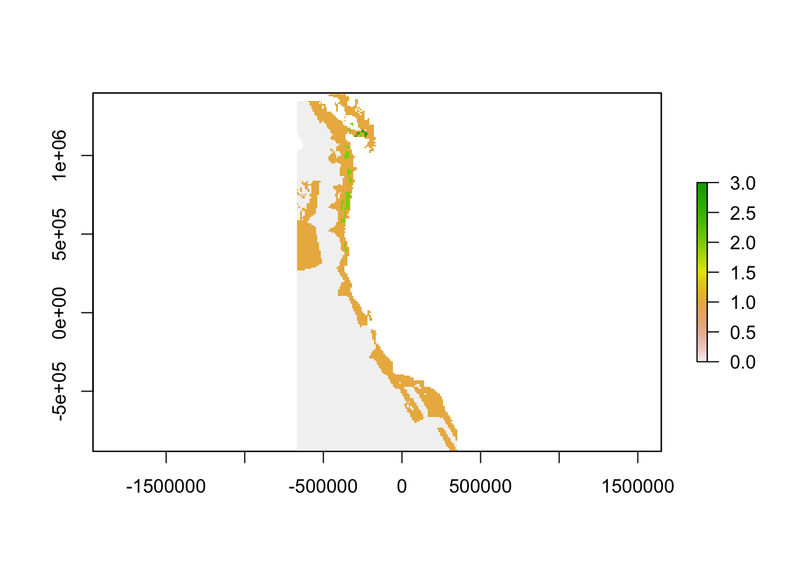
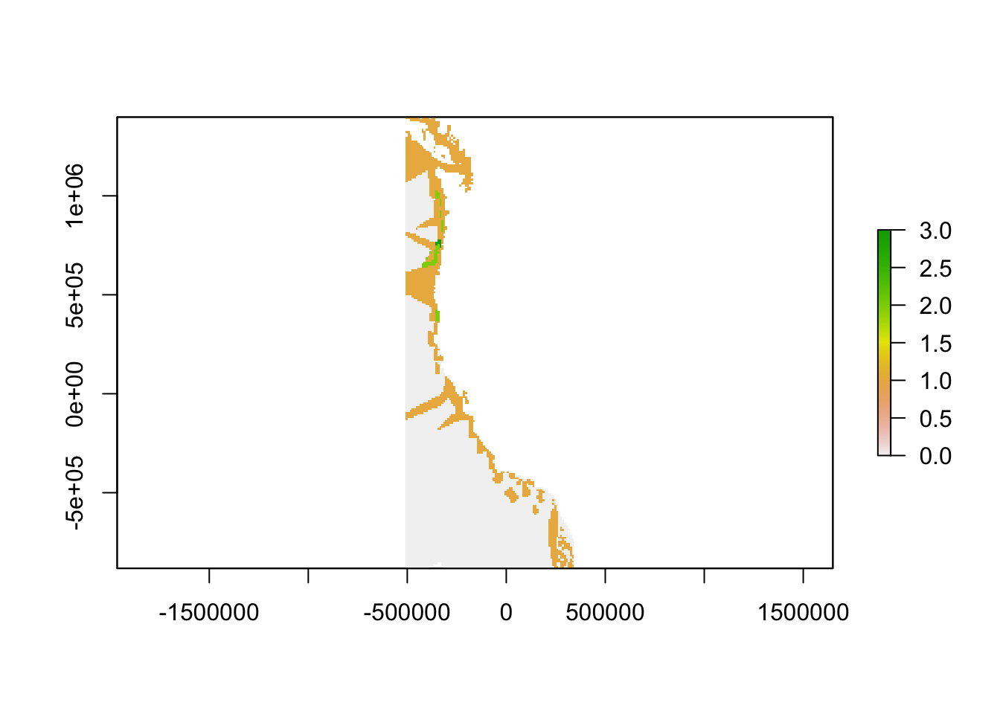

Gap Analysis
Step 1. Manipulate sea surface temperature and dissolved oxygen as proxies for ocean acidificiation change
Load packages
if (!require(pacman)) install.packages("pacman")
library(pacman)
p_load(
tidyverse, here, glue,
devtools,
raster,
sdmpredictors, dismo,
deldir,
mapview,
tmap)
devtools::load_all(here("../oatools"))Set paths and variables
dir_data <- here("data")
dir_sdmdata_old <- here("data/sdmpredictors")
dir_cache <- here("cache")
dir_sdmdata <- here("cache/sdmpredictors")
SST_tif <- here("data/sst_mean.tif")
DO_tif <- here("data/do_mean.tif")Set cache
if (!dir.exists(dir_data)) dir.create(dir_data)
if (!dir.exists(dir_cache)) dir.create(dir_cache)
if (!dir.exists(dir_sdmdata) & dir.exists(dir_sdmdata_old))
file.rename(dir_sdmdata_old, dir_sdmdata)
if (!dir.exists(dir_sdmdata)) dir.create(dir_sdmdata)Set extent and coordinate reference system
This is specific to our study area. We used NAD 83 California Teale Albers and used an extent that included waters off all three West Coast States.
ext_study <- extent(-670000, 350000, -885000, 1400000)
crs_study <- '+init=EPSG:6414'Create sea surface temperature layer (mean and range)
We used filled and _nofill to ensure non NA values for cells near the coast
r_sst_mean_nofill <- lyr_to_tif(
lyr = "BO_sstmean",
tif = here("data/sst_mean.tif"),
crs = crs_study,
dir_sdm_cache = dir_sdmdata,
extent_crop = ext_study,
redo=F, fill_na=FALSE)
r_sst_mean <- lyr_to_tif(
lyr = "BO_sstmean",
tif = here("data/sst_mean.tif"),
crs = crs_study,
dir_sdm_cache = dir_sdmdata,
extent_crop = ext_study,
redo=F, fill_na=TRUE, fill_window=11) #caclulate mean
n_na_nofill <- sum(is.na(raster::getValues(r_sst_mean_nofill)))
n_na <- sum(is.na(raster::getValues(r_sst_mean)))
r_sst_range_nofill <- lyr_to_tif(
lyr = "BO_sstrange",
tif = here("data/sst_range.tif"),
crs = crs_study,
dir_sdm_cache = dir_sdmdata,
extent_crop = ext_study,
redo=F, fill_na=FALSE)
r_sst_range <- lyr_to_tif(
lyr = "BO_sstrange",
tif = here("data/sst_range.tif"),
crs = crs_study,
dir_sdm_cache = dir_sdmdata,
extent_crop = ext_study,
redo=F, fill_na=TRUE, fill_window=11)Create dissolved oxygen layer (mean and range)
r_do_mean_nofill <- lyr_to_tif(
lyr = "BO_dissox",
tif = here("data/do_mean.tif"),
crs = crs_study,
dir_sdm_cache = dir_sdmdata,
extent_crop = ext_study,
redo=F, fill_na=FALSE)
r_do_mean <- lyr_to_tif(
lyr = "BO_dissox",
tif = here("data/do_mean.tif"),
crs = crs_study,
dir_sdm_cache = dir_sdmdata,
extent_crop = ext_study,
redo=F, fill_na=TRUE, fill_window=11) #calculate mean
r_do_range_nofill <- lyr_to_tif(
lyr = "BO2_dissoxrange_bdmin",
tif = here("data/do_range.tif"),
crs = crs_study,
dir_sdm_cache = dir_sdmdata,
extent_crop = ext_study,
redo=F, fill_na=FALSE)
r_do_range <- lyr_to_tif(
lyr = "BO2_dissoxrange_bdmin",
tif = here("data/do_range.tif"),
crs = crs_study,
dir_sdm_cache = dir_sdmdata,
extent_crop = ext_study,
redo=F, fill_na=TRUE, fill_window=11)Step 2. Relate SST and DO trends to each monitoring site
Load monitoring inventory
This step can be done locally when updated versions of the monitoring inventory are available
inventory <- read_csv(here("data/inventory.csv"))Tidy Inventory
- Isolate OAH Focus Data Collection
- Quantify Data Collection Frequency (measurements/year)
- Remove NA coordinate entries from gliders
- Transform latitude and longitude to numeric
- Create subsets of data
# remove non OAH focus entries
oahfocus <- subset(inventory, OAHFocus == "OA" | OAHFocus == "H" | OAHFocus == "OAH")
# convert frequencies into numeric values with lookup table
oahfocus$MeasFreq[oahfocus$MeasFreq =="Once"] <- 0
oahfocus$MeasFreq[oahfocus$MeasFreq == 10] <- 52560
oahfocus$MeasFreq[oahfocus$MeasFreq =="< 6 hours"] <- 1460
oahfocus$MeasFreq[oahfocus$MeasFreq == 60] <- 8760
oahfocus$MeasFreq[oahfocus$MeasFreq =="Daily"] <- 365
oahfocus$MeasFreq[oahfocus$MeasFreq ==30] <- 17520
oahfocus$MeasFreq[oahfocus$MeasFreq == 20] <- 26280
oahfocus$MeasFreq[oahfocus$MeasFreq == 15] <- 35040
oahfocus$MeasFreq[oahfocus$MeasFreq =="Quarterly"] <- 4
oahfocus$MeasFreq[oahfocus$MeasFreq =="Annual"] <- 1
oahfocus$MeasFreq[oahfocus$MeasFreq =="Monthly"] <- 12
oahfocus$MeasFreq[oahfocus$MeasFreq == 5] <- 105120
oahfocus$MeasFreq[oahfocus$MeasFreq == 6] <- 87600
oahfocus$MeasFreq[oahfocus$MeasFreq =="Semi-annual"] <- 2
oahfocus$MeasFreq[oahfocus$MeasFreq == 180] <- 2920
oahfocus$MeasFreq[oahfocus$MeasFreq == 2] <- 262800
oahfocus$MeasFreq[oahfocus$MeasFreq == 0.25] <- 2102400
oahfocus$MeasFreq[oahfocus$MeasFreq == 3] <- 175200
oahfocus$MeasFreq[oahfocus$MeasFreq == 1] <- 525600
oahfocus$MeasFreq[oahfocus$MeasFreq == 120] <- 2920
oahfocus$MeasFreq[oahfocus$MeasFreq =="Bi-weekly"] <- 26
oahfocus$MeasFreq[oahfocus$MeasFreq == 360] <- 1460
oahfocus$MeasFreq[oahfocus$MeasFreq == 720] <- 730
oahfocus$MeasFreq[oahfocus$MeasFreq =="Seasonally"] <- 1
oahfocus$MeasFreq[oahfocus$MeasFreq =="1/4 second"] <- 126144000
oahfocus$MeasFreq[oahfocus$MeasFreq =="Bi-monthly"] <- 6
oahfocus$MeasFreq[oahfocus$MeasFreq =="5 Years"] <- 0.2
oahfocus$MeasFreq[oahfocus$MeasFreq =="Bi-weekly"] <- 26
oahfocus$MeasFreq[oahfocus$MeasFreq =="Variable"] <- 0
oahfocus$MeasFreq[oahfocus$MeasFreq =="Decadal"] <- 0.1
oahfocus$MeasFreq[oahfocus$MeasFreq =="Biennial"] <- 0.5
oahfocus$MeasFreq[oahfocus$MeasFreq =="Weekly"] <- 52
oahfocus$MeasFreq[oahfocus$MeasFreq =="Triennial"] <- 0.33333
oahfocus$MeasFreq[oahfocus$MeasFreq =="Trimester"] <- 3
# use this to check to make sure all frequencies were quantified
# unique(oahfocus$MeasFreq)
# remove NA coordinates
oahfocus <- oahfocus[!is.na(oahfocus$Latitude), ]
oahfocus <- oahfocus[!is.na(oahfocus$Longitude), ]
# remove spaces and transform to numeric
gsub(" ", "", oahfocus$Latitude)
gsub(" ", "", oahfocus$Longitude)
gsub("'<ca>'", "", oahfocus$Longitude)
oahfocus$Longitude<-as.numeric(oahfocus$Longitude)
oahfocus$Latitude<-as.numeric(oahfocus$Latitude)
# subset data
carbcomplete<-subset(oahfocus, DisCrbPmtr>1 | ISCrbPmtr > 1)
incomplete <- subset(oahfocus, DisCrbPmtr<2 & ISCrbPmtr < 2)
highfrequency<-subset(oahfocus, MeasFreq > 364)
highfreqcarbcomplete<-subset(oahfocus, MeasFreq > 364 & DisCrbPmtr>1 | MeasFreq > 364 & ISCrbPmtr > 1)
lowfrequency <- subset(oahfocus, MeasFreq < 365)Transform into spatial data
# isolate coordinate columns
coords <- cbind.data.frame(oahfocus$Longitude, oahfocus$Latitude)
# remove duplicate locations
deduped.coords<-unique(coords)
# create spatial points objects
inventorycoords <- SpatialPoints(deduped.coords, CRS("+proj=longlat +ellps=WGS84"))
inventorycoords <- spTransform(inventorycoords, CRS('+init=EPSG:6414'))
# isolate coordinate columns
coords <- cbind.data.frame(oahfocus$Longitude, oahfocus$Latitude)
carbcompletecoords <- cbind.data.frame(carbcomplete$Longitude, carbcomplete$Latitude)
incompletecoords <- cbind.data.frame(incomplete$Longitude, incomplete$Latitude)
highfrequencycoords <- cbind.data.frame(highfrequency$Longitude, highfrequency$Latitude)
lowfrequencycoords <- cbind.data.frame(lowfrequency$Longitude, lowfrequency$Latitude)
highfreqcarbcompletecoords <- cbind.data.frame(highfreqcarbcomplete$Longitude, highfreqcarbcomplete$Latitude)
# remove duplicate locations
deduped.coords<-unique(coords)
deduped.carbcomplete <- unique(carbcompletecoords)
deduped.incomplete <- unique(incompletecoords)
deduped.highfrequency <- unique(highfrequencycoords)
deduped.lowfrequency <- unique(lowfrequencycoords)
deduped.highfreqcarbcomplete <- unique(highfreqcarbcompletecoords)
# create spatial points objects
inventorycoords <- SpatialPoints(deduped.coords, CRS("+proj=longlat +ellps=WGS84"))
inventorycoords <- spTransform(inventorycoords, CRS('+init=EPSG:6414'))
carbcompletecoords <- SpatialPoints(deduped.carbcomplete, CRS("+proj=longlat +ellps=WGS84"))
carbcompletecoords <- spTransform(carbcompletecoords, CRS('+init=EPSG:6414'))
incompletecoords <- SpatialPoints(deduped.incomplete, CRS("+proj=longlat +ellps=WGS84"))
incompletecoords <- spTransform(incompletecoords, CRS('+init=EPSG:6414'))
highfreqcoords <- SpatialPoints(deduped.highfrequency, CRS("+proj=longlat +ellps=WGS84"))
highfreqcoords <- spTransform(highfreqcoords, CRS('+init=EPSG:6414'))
lowfreqcoords <- SpatialPoints(deduped.lowfrequency, CRS("+proj=longlat +ellps=WGS84"))
lowfreqcoords <- spTransform(lowfreqcoords, CRS('+init=EPSG:6414'))Create voronoi polygons and rasterize the results
This groups all cells that are nearest to a given monitoring site into a polygon. Rasterizing the result transforms the result from vector data to continuous raster data.
vor <-voronoi(inventorycoords)
carbcompletevor <- voronoi(carbcompletecoords)
incompletevor <- voronoi(incompletecoords)
highfreqvor <- voronoi(highfreqcoords)
lowfreqvor <- voronoi(lowfreqcoords)
vorraster<- rasterize(vor, r_sst_mean, "id")
carbcompletevorraster<- rasterize(carbcompletevor, r_sst_mean, "id")
incompletevorraster<- rasterize(incompletevor, r_sst_mean, "id")
highfreqvorraster<- rasterize(highfreqvor, r_sst_mean, "id")
lowfreqvorraster<- rasterize(lowfreqvor, r_sst_mean, "id")
plot(vor)Extract SST mean and range for each monitoring site cell and substitute value for each voronoi polygon
This assigns SST mean and range values to all cells closest to a given monitoring site with the SST mean and range values measured at the monitoring site.
sitesst<- raster::extract(r_sst_mean, inventorycoords, method='simple', df=TRUE)
carbcompletesitesst<- raster::extract(r_sst_mean, carbcompletecoords, method='simple', df=TRUE)
highfreqsitesst<- raster::extract(r_sst_mean, highfreqcoords, method='simple', df=TRUE)
# extract sst value for each monitoring site cell
colnames(sitesst)<-c("id", "SST")
colnames(carbcompletesitesst)<-c("id", "SST")
colnames(highfreqsitesst)<-c("id", "SST")
# rename column names of sitesst
polygonsst <- subs(vorraster, sitesst, by="id", which="SST", subsWithNA=FALSE)
carbcompletepolygonsst <- subs(carbcompletevorraster, carbcompletesitesst, by="id", which="SST", subsWithNA=FALSE)
highfreqpolygonsst <- subs(highfreqvorraster, highfreqsitesst, by="id", which="SST", subsWithNA=FALSE)
# substitute polygon id for monitoring site sea surface temerature of that polygon
sitesstrange<- raster::extract(r_sst_range, inventorycoords, method='simple', df=TRUE)
carbcompletesitesstrange<- raster::extract(r_sst_range, carbcompletecoords, method='simple', df=TRUE)
highfreqsitesstrange<- raster::extract(r_sst_range, highfreqcoords, method='simple', df=TRUE)
# extract sst range value for each monitoring site cell
colnames(sitesstrange)<-c("id", "SSTrange")
colnames(carbcompletesitesstrange)<-c("id", "SSTrange")
colnames(highfreqsitesstrange)<-c("id", "SSTrange")
# rename column names of sitesstrange
polygonsstrange<-subs(vorraster, sitesstrange, by="id", which="SSTrange", subsWithNA=FALSE)
carbcompletepolygonsstrange <- subs(carbcompletevorraster, carbcompletesitesstrange, by="id", which="SSTrange", subsWithNA=FALSE)
highfreqpolygonsstrange <- subs(highfreqvorraster, highfreqsitesstrange, by="id", which="SSTrange", subsWithNA=FALSE)
# substitute polygon id for monitoring site sea surface temerature of that polygonRepeat with DO
# extract do value for each monitoring site cell
sitedo<- raster::extract(r_do_mean, inventorycoords, method='simple', df=TRUE)
carbcompletesitedo<- raster::extract(r_do_mean, carbcompletecoords, method='simple', df=TRUE)
highfreqsitedo<- raster::extract(r_do_mean, highfreqcoords, method='simple', df=TRUE)
# rename column names of sitedo
colnames(sitedo)<-c("id", "DO")
colnames(carbcompletesitedo)<-c("id", "DO")
colnames(highfreqsitedo)<-c("id", "DO")
# substitute polygon id for monitoring site sea surface temerature of that polygon
polygondo<-subs(vorraster, sitedo, by="id", which="DO")
carbcompletepolygondo<-subs(carbcompletevorraster, carbcompletesitedo, by="id", which="DO")
highfreqpolygondo<-subs(highfreqvorraster, highfreqsitedo, by="id", which="DO")
# extract do range value for each monitoring site cell
sitedorange<- raster::extract(r_do_range, inventorycoords, method='simple', df=TRUE)
carbcompletesitedorange<- raster::extract(r_do_range, carbcompletecoords, method='simple', df=TRUE)
highfreqsitedorange<- raster::extract(r_do_range, highfreqcoords, method='simple', df=TRUE)
# rename column names of sitedorange
colnames(sitedorange)<-c("id", "DOrange")
colnames(carbcompletesitedorange)<-c("id", "DO")
colnames(highfreqsitedorange)<-c("id", "DO")
# substitute polygon id for monitoring site sea surface temerature of that polygon
polygondorange<-subs(vorraster, sitedorange, by="id", which="DOrange")
carbcompletepolygondorange<-subs(carbcompletevorraster, carbcompletesitedorange, by="id", which="DO")
highfreqpolygondorange<-subs(highfreqvorraster, highfreqsitedorange, by="id", which="DO")Step 3. Create “oceanographic dissimiarity” layer relative to monitoring asset
Normalize SST, DO, and distance
Normalize by dividing each raster by the maximum ovbserved value in that raster. Now each raster contains values between 0 and 1.
r_sst_mean_nofill_norm<-r_sst_mean_nofill/maxValue(r_sst_mean_nofill)
r_sst_range_nofill_norm<-r_sst_range_nofill/maxValue(r_sst_range_nofill)
r_do_mean_nofill_norm<-r_do_mean_nofill/maxValue(r_do_mean_nofill)
r_do_range_nofill_norm<-r_do_range_nofill/maxValue(r_do_range_nofill)
polygonsst<-polygonsst/maxValue(r_sst_mean_nofill)
carbcompletepolygonsst<-carbcompletepolygonsst/maxValue(r_sst_mean_nofill)
highfreqpolygonsst<-highfreqpolygonsst/maxValue(r_sst_mean_nofill)
polygonsstrange<-polygonsstrange/maxValue(r_sst_range_nofill)
carbcompletepolygonsstrange<-carbcompletepolygonsstrange/maxValue(r_sst_range_nofill)
highfreqpolygonsstrange<-highfreqpolygonsstrange/maxValue(r_sst_range_nofill)
polygondo<-polygondo/maxValue(r_do_mean_nofill)
carbcompletepolygondo<-carbcompletepolygondo/maxValue(r_do_mean_nofill)
highfreqpolygondo<-highfreqpolygondo/maxValue(r_do_mean_nofill)
polygondorange<-polygondorange/maxValue(r_do_range_nofill)
carbcompletepolygondorange<-carbcompletepolygondorange/maxValue(r_do_range_nofill)
highfreqpolygondorange<-highfreqpolygondorange/maxValue(r_do_range_nofill)Calculate differences between each cell and the closest monitoring site
# sst mean
sstmeandiff <- abs(r_sst_mean_nofill_norm - polygonsst)
carbcompletesstmeandiff <- abs(r_sst_mean_nofill_norm - carbcompletepolygonsst)
highfreqsstmeandiff <- abs(r_sst_mean_nofill_norm - highfreqpolygonsst)
# sst range
sstrangediff <- abs(r_sst_range_nofill_norm - polygonsstrange)
carbcompletesstrangediff <- abs(r_sst_range_nofill_norm - carbcompletepolygonsstrange)
highfreqsstrangediff <- abs(r_sst_range_nofill_norm - highfreqpolygonsstrange)
# do mean
domeandiff <- abs(r_do_mean_nofill_norm - polygondo)
carbcompletedomeandiff <- abs(r_do_mean_nofill_norm - carbcompletepolygondo)
highfreqdomeandiff <- abs(r_do_mean_nofill_norm - highfreqpolygondo)
# do range
dorangediff <- abs(r_do_range_nofill_norm - polygondorange)
carbcompletedorangediff <- abs(r_do_range_nofill_norm - carbcompletepolygondorange)
highfreqdorangediff <- abs(r_do_range_nofill_norm - highfreqpolygondorange)Determine Weights
We chose these weights because we want to be sure to capture the “extreme” acidification events, influenced more by the range (temporal variation) than by the mean. We chose the distance weight because the other aspects of our analysis are all normalized between 0 and 1, so the distance values must we weighted such that they are on the same order. A sensitivity analysis on these weighting factors follows.
distanceweight = 10^-6
temporalweight = 10Create oceanographic dissimilarity layer
To account for variation in both SST and DO as a combined proxy for ocean acidification variability, we use the following formula:
spatial dissimilarity = (normalized difference between mean sst in cell and at nearest monitoring site)^2 + (normalized difference between mean do in cell and at nearest monitoring site)^2
temporal dissimilarity = (normalized difference between range sst in cell and at nearest monitoring site)^2 + (normalized difference between range do in cell and at nearest monitoring site)^2
oceanographic dissimilarity = sqrt(spatial dissimilarity + weighted temporal dissimilarity)
dissimilarity <- sqrt((sstmeandiff^2+domeandiff^2)+temporalweight*(sstrangediff^2+dorangediff^2))
carbcompletedissimilarity<- sqrt((carbcompletesstmeandiff^2+carbcompletedomeandiff^2)+temporalweight*(carbcompletesstrangediff^2+carbcompletedorangediff^2))
highfreqdissimilarity <- sqrt((highfreqsstmeandiff^2+highfreqdomeandiff^2)+temporalweight*(highfreqsstrangediff^2+highfreqdorangediff^2))Step 4. Combine dissimilarity and distance to find gaps
To combine oceanigraphic dissimilarity and distnce, we use the following formula:
gap = sqrt(oceanographic dissimilarity^2 + weighted geographic distance^2)
distance<-distanceFromPoints(dissimilarity, inventorycoords)*distanceweight
carbcompletedistance<-distanceFromPoints(carbcompletedissimilarity, carbcompletecoords)*distanceweight
highfreqdistance<-distanceFromPoints(highfreqdissimilarity, highfreqcoords)*distanceweight
gap<-setValues(distance, sqrt((getValues(distance)^2+(getValues(dissimilarity)^2))))
carbcompletegap<-setValues(carbcompletedistance, sqrt((getValues(carbcompletedistance)^2+(getValues(carbcompletedissimilarity)^2))))
highfreqgap<-setValues(highfreqdistance, sqrt((getValues(highfreqdistance)^2+(getValues(highfreqdissimilarity)^2))))
severegaps <- setValues(distance, sqrt((getValues(distance)^2+(getValues(dissimilarity)^2)))) > quantile(gap, (.999))
highprioritygaps <- setValues(distance, sqrt((getValues(distance)^2+(getValues(dissimilarity)^2)))) > quantile(gap, (.99))
lowprioritygaps<-setValues(distance, sqrt((getValues(distance)^2+(getValues(dissimilarity)^2)))) > quantile(gap, (.75))
finalgaps<- severegaps+lowprioritygaps+highprioritygaps
carbcompleteseveregaps <- setValues(carbcompletedistance, sqrt((getValues(carbcompletedistance)^2+(getValues(carbcompletedissimilarity)^2)))) > quantile(carbcompletegap, (.999))
carbcompletehighprioritygaps<- setValues(carbcompletedistance, sqrt((getValues(carbcompletedistance)^2+(getValues(carbcompletedissimilarity)^2)))) > quantile(carbcompletegap, (.99))
carbcompletelowprioritygaps<- setValues(carbcompletedistance, sqrt((getValues(carbcompletedistance)^2+(getValues(carbcompletedissimilarity)^2)))) > quantile(carbcompletegap, (.75))
carbcompletefinalgaps<- carbcompleteseveregaps + carbcompletelowprioritygaps+carbcompletehighprioritygaps
highfreqseveregaps <- setValues(highfreqdistance, sqrt((getValues(highfreqdistance)^2+(getValues(highfreqdissimilarity)^2)))) > quantile(highfreqgap, (.999))
highfreqhighprioritygaps<-setValues(highfreqdistance, sqrt((getValues(highfreqdistance)^2+(getValues(highfreqdissimilarity)^2)))) > quantile(highfreqgap, (.99))
highfreqlowprioritygaps<-setValues(highfreqdistance, sqrt((getValues(highfreqdistance)^2+(getValues(highfreqdissimilarity)^2)))) > quantile(highfreqgap, (.75))
highfreqfinalgaps<- highfreqseveregaps+highfreqlowprioritygaps+highfreqhighprioritygapsVisualize gaps along the West Coast
Here, severe gaps, or the top 0.1% of gaps will have a value of 3, high priority gaps, or the top 1% of gaps will have a value of 2, and low priority gaps, or the top 25% of gaps will have a value of 1.
pal <- colorRampPalette(c("royalblue2", "white", "red"))
tm_shape(finalgaps)+
tm_raster(palette = pal(4), colorNA = NULL, breaks = c(-0.5, 0.5, 1.5, 2.5, 3.5), title = "Ocean Acidification Data Gaps", labels = c("Sufficient Data", "Low Priority Gaps", "High Priority Gaps", "Severe Gaps"))+
tm_layout(main.title = "Data Gap Severity", main.title.size = 1, bg.color = "white", main.title.position = c("center", "top"), legend.show = TRUE, legend.position = c("right", "center"), fontfamily = "serif", fontface = "bold")+
tm_layout(basemaps = c('OpenStreetMap'))+
tm_legend()+
tm_shape(inventorycoords)+
tm_dots(col = "black")tm_shape(carbcompletefinalgaps)+
tm_raster(palette = pal(4), colorNA = NULL, breaks = c(-0.5, 0.5, 1.5, 2.5, 3.5), title = "Aragonite Measurement Data Gaps", labels = c("Sufficient Data", "Low Priority Gaps", "High Priority Gaps", "Severe Gaps"))+
tm_layout(main.title = "Data Gap Severity", main.title.size = 1, bg.color = "white", main.title.position = c("center", "top"), legend.show = TRUE, legend.position = c("right", "center"), fontfamily = "serif", fontface = "bold")+
tm_layout(basemaps = c('OpenStreetMap'))+
tm_shape(incompletecoords)+
tm_dots(col = "black")
tm_shape(highfreqfinalgaps)+
tm_raster(palette = pal(4), colorNA = NULL, breaks = c(-0.5, 0.5, 1.5, 2.5, 3.5), title = "High Frequency Data Gaps", labels = c("Sufficient Data", "Low Priority Gaps", "High Priority Gaps", "Severe Gaps"))+
tm_layout(main.title = "Data Gap Severity", main.title.size = 1, bg.color = "white", main.title.position = c("center", "top"), legend.show = TRUE, legend.position = c("right", "center"), fontfamily = "serif", fontface = "bold")+
tm_layout(basemaps = c('OpenStreetMap'))+
tm_shape(highfreqcoords)+
tm_dots(col = "black")
Step 5. Sensitivity Analysis on the weighting factors
Create matrix of possible weights for temoral weight and distance weight
distanceweight = c(10^-6, 2*10^-6, 4*10^-6, 6*10^-6, 8*10^-6, 10^-5)
temporalweight = c(2, 4, 6, 8, 10, 12, 14, 16, 18, 20)Run gap analysis through all cominations of weights to compare where high priority gaps exist
The result is 100 rasters of the gap analysis result for where high priority gaps exist under different weighting combinations. This can be repeated for high priority gaps and low priority gaps.
rastersensitivity <- list()
for(i in 1:length(distanceweight)){
for(j in 1:length(temporalweight)){
dissimilarity <- sqrt((sstmeandiff^2+domeandiff^2)+temporalweight[j]*(sstrangediff^2+dorangediff^2))
distance<-distanceFromPoints(dissimilarity, inventorycoords)*distanceweight[i]
gap<-setValues(distance, sqrt((getValues(distance)^2+(getValues(dissimilarity)^2))))
severegaps <- setValues(distance, sqrt((getValues(distance)^2+(getValues(dissimilarity)^2)))) > quantile(gap, (.999))
name = paste(temporalweight[j], distanceweight[i], sep = "_")
rastersensitivity[[name]] = highprioritygaps
}
}Transform to raster stack
sensitivitystack <- stack(rastersensitivity[[1]])
for(i in 2:length(rastersensitivity)) sensitivitystack <- addLayer(sensitivitystack, rastersensitivity[[i]])Sum across all rasters within raster stack
In cells where the sum is 100, severe gaps existed in all of the weighing combnations. Where the sum is 0, severe gaps were not present under any of the weighting combinations. In cells where the sum is between 0 and 100, the presence of a severe gap was sensitive to weighting factors.
sum <- sum(sensitivitystack)
plot(sum)
freq(sum)…